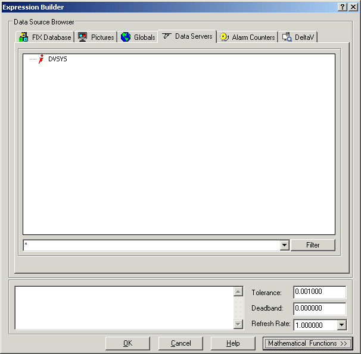

Building expressions
As described earlier, there are many data sources you can use to animate the properties of an object. Another valuable option is to use an expression. An expression is a data value or multiple data values connected with one or more operators. Using the Expression Builder, you can create specific expressions that access data from unique sources. This gives you more flexibility when assigning dynamic object properties.
You can use the following data values in an expression:
Numeric constants.
Strings enclosed in quotation marks (" ").
DeltaV Operate tags.
OPC server I/O addresses.
Picture properties.
Object properties.
The Expression Builder Dialog Box
The Expression Builder dialog box is a tool for creating expressions. This dialog box lets you select the data source you want to use or create expressions by combining two or more data sources together. To open the Expression Builder, click the ellipsis button next to the Data Source field on the Animations dialog box or any other dialog box that requires entry of a data source. The Expression Builder dialog box is shown below:

The Expression Builder dialog box is divided into multiple tabs, which are described in the following table.
|
FIX Database |
Any servers to which your computer is communicating. Use a data server as a data source when you want to animate an object or a tag. The tabbed page includes Node Names, Tag Names, and Field Names windows to help you specify your selections. |
|
Pictures |
The pictures residing on your computer. An Objects window displays each object in the picture. Use one of these objects as a data source when you want to animate an object with a picture or object property value. A Properties window displays the properties for the selected object so that you can select a specific property. |
|
Globals |
Global data sources. The tabbed page includes Objects and Properties windows to help you specify your selections. |
|
Data Servers |
Third party OPC servers. Data source connections to data servers fire at run-time only. |
|
Alarm Counters |
Alarm areas and alarm counters. This page displays a list of alarm areas on the selected server. Also displays the alarm counter (ALARMCOUNTERS) tag. |
|
DeltaV |
DeltaV system parameters. Provides access to DeltaV control system parameters and operator display parameters. For more information about these parameters, click the Help button on the parameter browse dialog in DeltaV Operate configure mode. |
When you select a data source, it appears in the field at the bottom of the dialog box. You can add strings by typing them into the field. You can also add operators and numeric constants by typing them into the field, or by clicking the operator buttons on the right side of the dialog box while the cursor is in the field. To display the operator buttons, click the Mathematical Functions button.
The Filter fields and buttons allow you to filter data sources. For more information, refer to Filtering Data Sources in the topic Defining Data Sources. Additionally, you can specify a tolerance, deadband, and refresh rate in the appropriate fields. These functions are described later in this section.
For more information on selecting data sources from the Expression Builder dialog box, including examples, refer to Selecting Data Sources from a List in the topic Defining Data Sources.
Customizing the Expression Builder Dialog Box
You can customize the Expression Builder by showing or hiding specific tabs. To do this, you modify properties in VBA. Refer to the following table.
|
FIX Database |
ShowDatabaseTab |
|
Pictures |
ShowPicturesTab |
|
Globals |
ShowGlobalsTab |
|
Data Servers |
ShowDataServersTab |
For more information on modifying VBA scripts, refer to Writing Scripts.